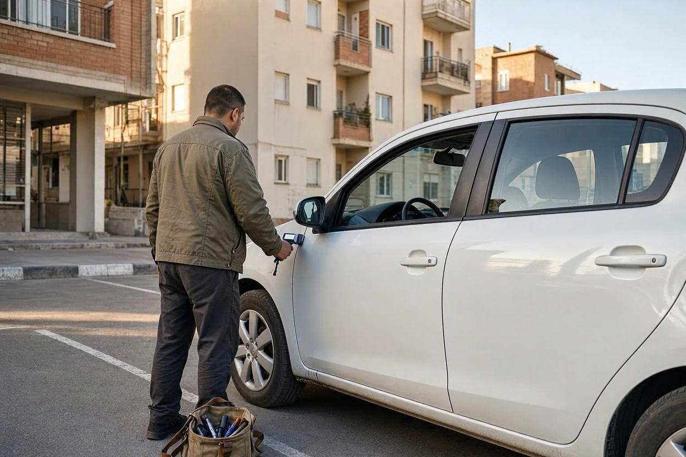
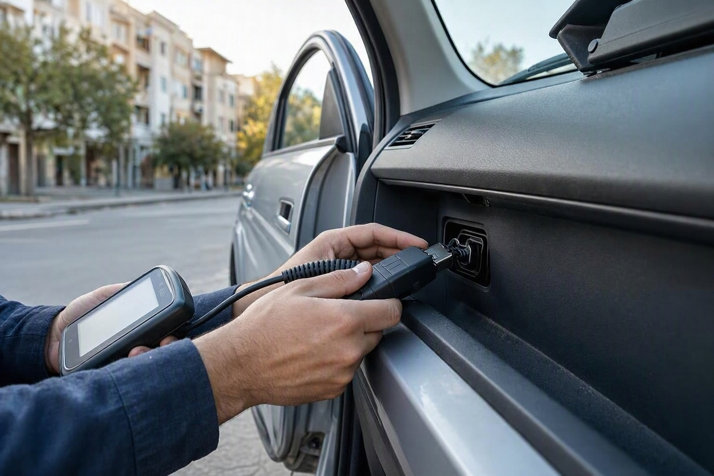
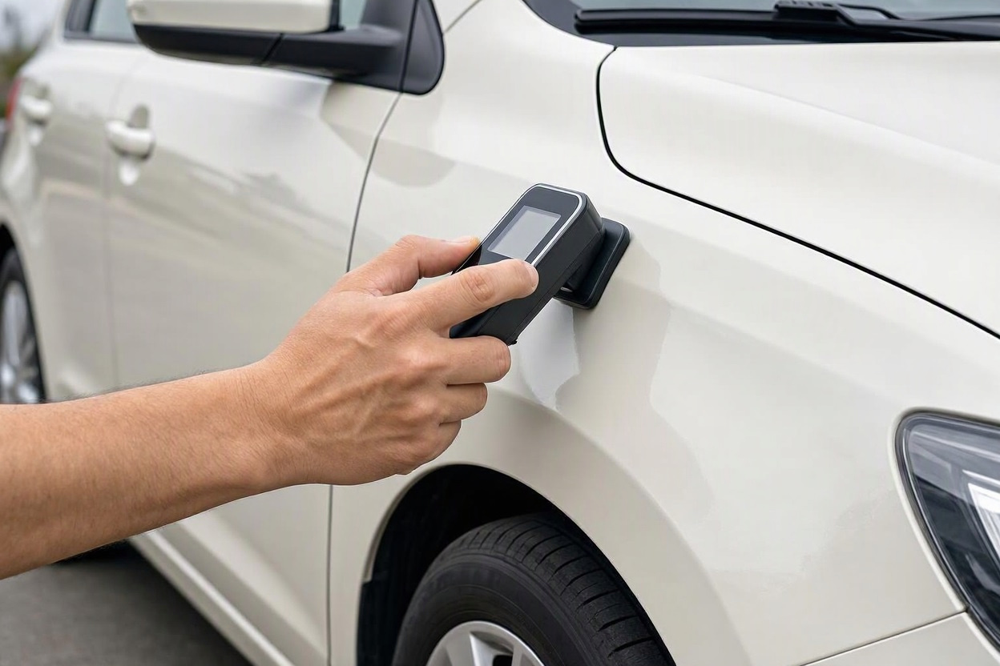
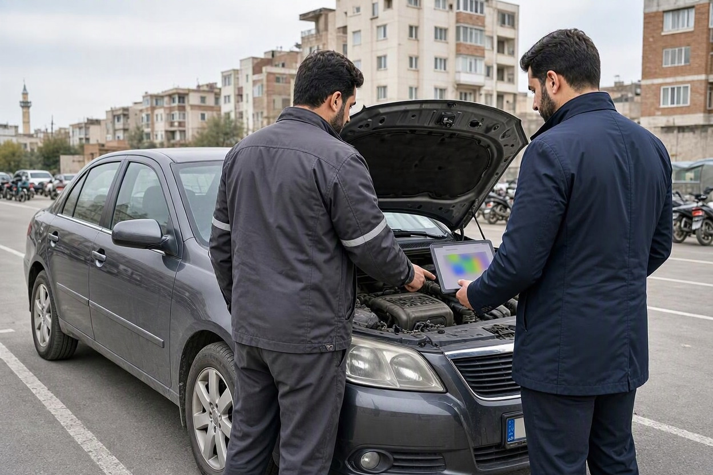

قیمت کارشناسی خودرو در ۱۴۰۵؛ هزینه کارشناسی خودرو دست دوم در محل
یک دنا پلاس دست دوم در آگهی دیدهاید، با فروشنده هماهنگ کردهاید و قرار است عصر در پارکینگ خانهاش خودرو را ببینید. حالا سه پیام از سه سرویس کارشناسی دارید: یکی نوشته «از ۱.۷ میلیون»، دیگری «حدود ۳ میلیون» و سومی قیمت را منوط به مدل خودرو کرده است. کدام عدد واقعی است و اختلاف از کجا میآید؟
این راهنما را تیم کارماچک، که در تهران کارشناسی خودرو را در محل و در مرکز انجام میدهد، با کنار هم گذاشتن نرخهای اعلامی بازار در مهر ۱۴۰۵، تعرفه رسمی کارشناسان دادگستری و هزینههای جانبی اعزام نوشته است تا قبل از پرداخت بدانید قیمت کارشناسی خودرو ۱۴۰۵ دقیقاً شامل چه چیزی است.
قیمت کارشناسی خودرو در مهر ۱۴۰۵ در تهران عدد ثابتی ندارد. کارشناسی کامل فنی و بدنه برای خودروهای داخلی رایج معمولاً بین ۱.۹ تا ۵ میلیون تومان، کارشناسی فقط رنگ و بدنه از حدود ۱ تا ۳ میلیون تومان و برای خودروهای وارداتی و لوکس تا ۱۲ میلیون تومان یا بیشتر است. کارشناسی در محل معمولاً حدود ۲۵۰ تا ۳۵۰ هزار تومان هزینه اعزام اضافه دارد.
خلاصه در یک دقیقه
- هیچ نهاد رسمی برای کارشناسی خرید و فروش خودرو نرخ مصوب ثابت اعلام نکرده است. قیمت را هر مجموعه بر اساس مدل، ارزش خودرو و دامنه بررسی تعیین میکند.
- بیشترین اثر روی قیمت را ارزش و نوع خودرو دارد. پلتفرمهایی که قیمت پلکانی دارند، برای یک پکیج یکسان از حدود ۱.۹ تا ۱۱ میلیون تومان نرخ میدهند.
- اعزام کارشناس به محل، حدود ۲۶۰ تا ۳۴۵ هزار تومان به هزینه اضافه میکند؛ بعضی سرویسها این مبلغ را داخل قیمت پکیج حساب میکنند.
- کارشناس رسمی دادگستری برای اصالت، علت تصادف یا تعیین مدل خودرو طبق تعرفه ۱۴۰۵ برای هر مورد ۲ میلیون تومان دریافت میکند؛ این کار با کارشناسی پیش از خرید فرق دارد.
- هزینه کارشناسی کامل یک خودروی داخلی معمولاً کمتر از دو دهم درصد قیمت خود خودرو است.
قیمت کارشناسی خودرو ۱۴۰۵ چقدر است؟ جدول نرخ مهر ماه
اول یک نکته که خیلیها نمیدانند: برای کارشناسی پیش از خرید و فروش خودرو، نه اتحادیهای و نه سازمانی در ۱۴۰۵ نرخ مصوب و الزامآور اعلام نکرده است. عددی که میپردازید نرخ خود مجموعه کارشناسی است. به همین دلیل بهترین کار، نگاه به بازهای است که چند سرویس فعال در تهران در یک بازه زمانی اعلام کردهاند.
جدول زیر از کنار هم گذاشتن نرخهای اعلامی سرویسهای کارشناسی آنلاین و حضوری تهران در شهریور و مهر ۱۴۰۵ ساخته شده است. اعداد به تومان هستند.
| نوع خدمت | بازه رایج در مهر ۱۴۰۵ | چه چیزی بررسی میشود |
|---|---|---|
| کارشناسی رنگ و بدنه | حدود ۱ تا ۳ میلیون | ضخامت رنگ هر قطعه، تعویضیها، صافکاری، اصالت شیشهها |
| کارشناسی استاندارد (فنی و بدنه) | ۱.۹ تا ۵ میلیون برای خودروهای داخلی رایج | بدنه، موتور، گیربکس، جلوبندی، دیاگ پایه و برآورد قیمت |
| کارشناسی ویژه با حضور مکانیک | از حدود ۳.۴ میلیون | موارد استاندارد به همراه عیبیابی دقیقتر و برآورد هزینه تعمیر |
| کارشناسی خودرو صفر هنگام تحویل | از حدود ۱.۸ میلیون | رنگ کارخانهای، سلامت قطعات، تطبیق آپشنها با فاکتور |
| خودروهای وارداتی و لوکس | حدود ۵ تا ۱۲ میلیون و گاهی بیشتر | همان موارد، با دیاگ تخصصی برند و زمان بررسی طولانیتر |
برای اینکه عدد ملموستر شود: در خرداد ۱۴۰۵ هزینه کارشناسی یک دنا پلاس ششسرعته مدل ۱۴۰۲ در یکی از پلتفرمهای بزرگ، بسته به نوع پکیج، بین ۱ میلیون و ۷۰۰ هزار تا ۴ میلیون و ۹۰۰ هزار تومان اعلام شده بود. یعنی برای یک خودرو، اختلاف ارزانترین و کاملترین پکیج نزدیک به سه برابر است.
مقایسه با زمستان گذشته هم جالب است. در دی ۱۴۰۴ کارشناسی کامل در تهران حدود ۱.۴ تا ۳.۸ میلیون تومان قیمت داشت. پس اگر عددی که امروز میشنوید بالاتر از تجربه پارسالتان است، بخش زیادی از آن به تورم هزینهها برمیگردد، نه لزوماً گرانفروشی.
قیمت بخش های جداگانه کارشناسی
بعضی کارشناسها خدمات را تکی هم انجام میدهند. نرخهای اعلامی مهر ۱۴۰۵ برای این بخشها تقریباً اینطور است:
- بررسی فنی و عملکرد موتور و گیربکس: حدود ۵۰۰ هزار تا ۱ میلیون تومان
- دیاگ کامل با دستگاه: حدود ۷۰۰ هزار تا ۲ میلیون تومان
- بررسی شاسی و سابقه تصادف: از ۵۰۰ هزار تومان؛ برای خودروی مشکوک به تصادف شدید تا حدود ۵ میلیون تومان
- بررسی سیستم برق و الکترونیک: حدود ۳۵۰ تا ۷۰۰ هزار تومان
- تست رانندگی همراه کارشناس: حدود ۲۵۰ تا ۵۰۰ هزار تومان
هزینه کارشناسی خودرو دست دوم در محل چقدر بیشتر است؟
کارشناسی در محل یعنی کارشناس با ضخامتسنج، دستگاه دیاگ و ابزار بررسی به پارکینگ فروشنده، نمایشگاه یا محل قرار شما میآید. نرخهای اعلامی مهر ۱۴۰۵ نشان میدهد این اعزام معمولاً حدود ۲۶۰ تا ۳۴۵ هزار تومان به قیمت اضافه میکند. سرویسهای عمومی خدمات در محل هم برای سفارشهای کارشناسی خودرو در تهران بازهای حدود ۱.۴ تا ۳.۹۵ میلیون تومان، با احتساب اعزام، گزارش کردهاند.
دو هزینه جانبی را هم از قبل بپرسید. اول هزینه لغو: اگر کارشناس برسد و فروشنده پشیمان شده باشد یا خودرو آنجا نباشد، برخی سرویسها هزینه رفتوآمد را جداگانه میگیرند. دوم فاصله: برای محلههای دور یا خارج از محدوده سرویس، گاهی مبلغ بیشتری اضافه میشود.

در محل بهتر است یا مراجعه به مرکز؟
اگر خودرو در نمایشگاه است یا فروشنده حاضر نیست ماشین را جابهجا کند، کارشناسی در محل تقریباً تنها راه است و هزینه اعزام ارزشش را دارد. اما اگر فروشنده همکاری میکند، مراجعه به مرکز چند مزیت دارد: بالابر برای دیدن زیر خودرو، نور یکنواخت برای تشخیص رنگ و هزینه کمتر. خودرویی که سابقه تصادف از جلو یا زیر دارد، روی بالابر بهتر شناخته میشود.
اگر هنوز با فروشنده درباره اینکه چه کسی هزینه را بدهد به نتیجه نرسیدهاید، راهنمای هزینه کارشناسی خودرو با خریدار است یا فروشنده عرف بازار و روش توافق منصفانه را توضیح داده است.
چرا قیمت کارشناسی یک خودرو با خودروی دیگر فرق دارد؟
اختلاف سه برابری قیمتها اتفاقی نیست. پنج عامل اصلی، عدد نهایی را میسازند:
- ارزش و کلاس خودرو:پلتفرمهای بزرگ قیمت را پلکانی و بر اساس ارزش خودرو تعیین میکنند. کارشناسی یک تیبا و یک کراساوور وارداتی با همان پکیج، میتواند چند برابر فاصله داشته باشد، چون مسئولیت گزارش و ضمانت آن هم بیشتر است.
- دامنه بررسی:فقط رنگ و بدنه حدود نیم ساعت طول میکشد. کارشناسی کامل با دیاگ و تست رانندگی معمولاً یک تا دو ساعت وقت میگیرد.
- حضور مکانیک:در پکیجهای ویژه، علاوه بر کارشناس بدنه، یک مکانیک هم عیبها را بررسی و هزینه تعمیر را برآورد میکند. همین، قیمت را از حدود ۳.۴ میلیون تومان شروع میکند.
- سن و نوع خودرو:خودروهای قدیمیتر یا خودروهایی با گیربکس اتوماتیک و سیستمهای الکترونیکی بیشتر، زمان بررسی طولانیتری دارند.
- گزارش مکتوب و ضمانت:برخی سرویسها گزارش را با سقف ضمانت مشخص، مثلاً ۲۵۰ یا ۶۰۰ میلیون تومان، پشتیبانی میکنند. این تعهد در قیمت لحاظ شده است.
تعرفه رسمی کارشناس دادگستری برای خودرو در ۱۴۰۵
تنها نرخ مصوب و رسمی مربوط به خودرو در ۱۴۰۵، تعرفه دستمزد کارشناسان رسمی دادگستری است که ۲۰ مرداد ۱۴۰۵ ابلاغ شد و تعرفههای قبلی را لغو کرد. این تعرفه برای کارهای قضایی و رسمی است، نه برای کارشناسی قبل از خرید.
| موضوع کارشناسی رسمی | دستمزد طبق تعرفه ۱۴۰۵ |
|---|---|
| رسیدگی به اصالت خودرو | ۲ میلیون تومان |
| تعیین علت تصادف و مقصر | ۲ میلیون تومان |
| تعیین مدل، تناژ و مشخصات فنی | ۲ میلیون تومان |
| چند موضوع برای یک خودرو (بهجز خسارت) | حداکثر ۳ میلیون تومان |
| سقف مجموع بندهای مربوط به یک خودرو | ۷ میلیون تومان |
ارزیابی میزان خسارت خودرو هم طبق فرمول درصدی تعرفه و بر اساس ارزش موضوع محاسبه میشود. حداقل دستمزد هر اظهارنظر کارشناس رسمی در ۱۴۰۵، ۲ میلیون تومان است.
کی سراغ کارشناس رسمی بروید؟ وقتی پرونده قضایی دارید، اصالت خودرو مورد اختلاف است، یا پس از خرید متوجه شدهاید خودرو تصادف شدید داشته و فروشنده کتمان کرده است. برای تصمیمگیری قبل از خرید، کارشناس رسمی معمولاً ابزار و دامنه بررسی یک کارشناسی کامل فنی و بدنه را ندارد.
قبل از بیعانه، خودرو را کارشناسی کنید
اگر فروشنده خودرو را جابهجا نمیکند، کارشناس میتواند به محل بیاید و وضعیت رنگ، بدنه، شاسی و فنی را پیش از پرداخت پول بررسی کند.
ثبت درخواست کارشناسی در محلکارشناسی خرید را با معاینه فنی اشتباه نگیرید
بعضی خریدارها فکر میکنند برگه معاینه فنی معتبر یعنی خودرو سالم است. معاینه فنی فقط آلایندگی، ترمز، چراغها، فرمان و چند مورد ایمنی پایه را میسنجد و درباره رنگ، تعویض قطعات بدنه، سلامت شاسی یا ارزش معامله چیزی نمیگوید.
تعرفه معاینه فنی ۱۴۰۵ را دولت تعیین کرده و از ۱۸ مرداد در سامانه سیمفا اعمال شده است: برای خودروی سبک تا ۱۴۰۰ کیلوگرم حدود ۵۶۱ هزار تومان (معاینه برتر حدود ۵۸۰ هزار تومان) و برای خودروی سبک بالای ۱۴۰۰ کیلوگرم حدود ۶۲۱ هزار تومان (معاینه برتر حدود ۶۵۱ هزار تومان). این عدد ربطی به قیمت کارشناسی خرید ندارد و جای آن را هم نمیگیرد.

هزینه کارشناسی در برابر ریسک معامله
عدد کارشناسی را باید کنار قیمت خودرو دید. در مهر ۱۴۰۵ قیمت پژو ۲۰۷ اتوماتیک در بازار تا حدود ۳.۸ میلیارد تومان رسیده و کوییک اتوماتیک کارکرده حدود یک میلیارد و ۶۳۰ میلیون تومان معامله میشود. اگر برای کارشناسی کامل یک کوییک ۳ میلیون تومان بپردازید، یعنی کمتر از دو دهم درصد قیمت خودرو.
در مقابل، یک قطعه تعویضی پنهان یا رنگشدگی که بهموقع دیده نشود، روی قیمت فروش بعدی همین خودرو اثر میگذارد. کارشناسی خوب فقط ایراد را پیدا نمیکند؛ مشخص میکند آن ایراد چقدر از ارزش خودرو کم میکند تا بتوانید بر اساس آن چانه بزنید یا از خرید انصراف بدهید. برای سنجیدن قیمت منصفانه پس از کارشناسی، ابزار قیمتگذاری خودرو هم کمک میکند.
قبل از پرداخت هزینه کارشناسی، این سؤال ها را بپرسید
دو سرویس با قیمت یکسان ممکن است کار کاملاً متفاوتی تحویل دهند. این فهرست را قبل از رزرو با کارشناس چک کنید:
- قیمت برای مدل، سال و تیپ دقیق این خودرو چقدر است، نه قیمت «از ...»؟
- هزینه اعزام به محل جداست یا داخل قیمت است؟
- اگر فروشنده سر قرار نیاید یا معامله لغو شود، چه مبلغی کسر میشود؟
- دیاگ، بررسی شاسی و تست رانندگی داخل پکیج هست یا جدا حساب میشود؟
- گزارش مکتوب با جزئیات هر قطعه تحویل میشود یا فقط توضیح شفاهی؟
- گزارش ضمانت یا مسئولیت مشخصی دارد؟ سقفش چقدر است؟
- کارشناسی حدوداً چقدر طول میکشد؟
اعتبار خود کارشناس هم به اندازه قیمت مهم است. معیارهای انتخاب را در مطلب انتخاب کارشناس خودرو معتبر با جزئیات نوشتهایم.

کارشناسی خودرو در محل با کارماچک
کارماچک یک مجموعه کارشناسی خودرو در تهران است که بررسی فنی و موتور، رنگ و بدنه، شاسی، دیاگ و آپشنها را با گزارش کامل انجام میدهد. کارشناسی هم در محل خودرو در تهران و شرق تهران، مثل تهرانپارس، نارمک، رسالت، حکیمیه و لویزان، انجام میشود و هم در مرکز کارماچک در میدان رسالت. میانگین زمان اعزام کارشناس حدود یک ساعت است.
فقط ایراد خودرو را شناسایی نمیکنیم؛ اثر آن روی هزینه تعمیر و ارزش واقعی معامله را هم مشخص میکنیم. برای اطلاع از هزینه دقیق خودروی موردنظرتان، هنگام رزرو کارشناسی خودرو مدل و سال خودرو را اعلام کنید.
جمع بندی
قیمت کارشناسی خودرو ۱۴۰۵ در تهران برای یک خودروی داخلی رایج معمولاً بین ۱.۹ تا ۵ میلیون تومان است و برای خودروهای وارداتی و لوکس تا ۱۲ میلیون تومان هم میرسد. کارشناسی در محل حدود ۲۵۰ تا ۳۵۰ هزار تومان گرانتر تمام میشود، مگر اینکه سرویس هزینه اعزام را داخل پکیج حساب کرده باشد.
عدد ارزانتر همیشه انتخاب بهتر نیست. ببینید پکیج شامل دیاگ، شاسی، تست رانندگی و گزارش مکتوب هست یا نه، و قیمت را برای مدل دقیق خودرو بپرسید. تعرفه کارشناس رسمی دادگستری و معاینه فنی هم دو موضوع جدا هستند و جای کارشناسی پیش از خرید را نمیگیرند.
کارشناسی را به محل خودرو بیاورید
زمان و محل بازدید را مشخص کنید تا کارشناس با تجهیزات کامل، پیش از پرداخت بیعانه خودرو را بررسی کند.
رزرو کارشناسی خودروسؤالات متداول
آیا برای کارشناسی خودرو در ۱۴۰۵ نرخ مصوب رسمی وجود دارد؟
نه. برای کارشناسی پیش از خرید و فروش خودرو هیچ نرخ مصوب الزامآوری اعلام نشده و هر مجموعه قیمت خودش را دارد. تنها تعرفه رسمی مرتبط، تعرفه کارشناسان رسمی دادگستری است که ۲۰ مرداد ۱۴۰۵ ابلاغ شد و برای کارهای قضایی مثل اصالت خودرو یا علت تصادف کاربرد دارد.
هزینه کارشناسی پژو ۲۰۶ یا ۲۰۷ دست دوم چقدر است؟
برای خودروهای داخلی رایج مثل پژو ۲۰۶ و ۲۰۷، کارشناسی کامل فنی و بدنه در مهر ۱۴۰۵ معمولاً بین ۱.۹ تا ۵ میلیون تومان است و فقط رنگ و بدنه از حدود ۱ میلیون تومان شروع میشود. عدد دقیق به تیپ، سال، نوع گیربکس و دامنه پکیج بستگی دارد، پس قیمت را با مشخصات کامل خودرو بپرسید.
کارشناسی در محل چقدر از مراجعه به مرکز گران تر است؟
در نرخهای اعلامی مهر ۱۴۰۵، هزینه اعزام کارشناس به محل حدود ۲۶۰ تا ۳۴۵ هزار تومان است. بعضی سرویسها این مبلغ را داخل قیمت پکیج حساب میکنند و بعضی جدا میگیرند. هزینه لغو بازدید در صورت نیامدن فروشنده را هم از قبل بپرسید.
کارشناسی خودرو چقدر طول می کشد؟
کارشناسی فقط رنگ و بدنه معمولاً حدود نیم ساعت طول میکشد. کارشناسی کامل با دیاگ، بررسی شاسی و تست رانندگی بسته به نوع خودرو معمولاً یک تا دو ساعت وقت میگیرد. خودروهای اتوماتیک یا مشکوک به تصادف ممکن است بیشتر زمان ببرند.
آیا کارشناسی فقط رنگ و بدنه برای خرید کافی است؟
برای تصمیم خرید معمولاً کافی نیست. رنگ و بدنه سالم چیزی درباره وضعیت موتور، گیربکس، جلوبندی یا خطاهای ثبتشده در ECU نمیگوید. اگر خودرو را برای استفاده چندساله میخرید، کارشناسی فنی و بدنه خودرو را کامل انجام دهید.
چرا قیمت کارشناسی خودروهای خارجی بیشتر است؟
خودروهای وارداتی و لوکس دیاگ تخصصی برند، زمان بررسی بیشتر و قطعات گرانتری دارند و مسئولیت و ضمانت گزارش هم برای آنها سنگینتر است. به همین دلیل در مهر ۱۴۰۵ کارشناسی این خودروها حدود ۵ تا ۱۲ میلیون تومان و گاهی بیشتر قیمت دارد.